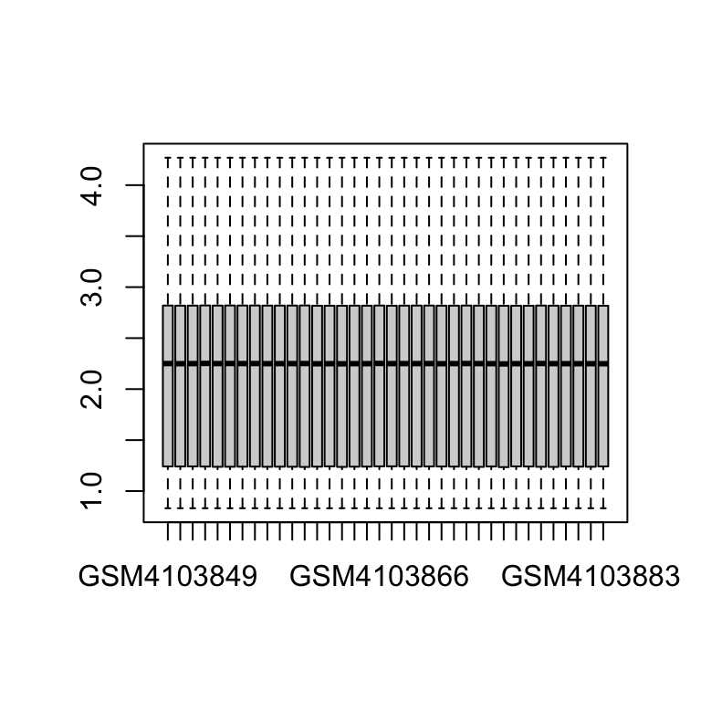
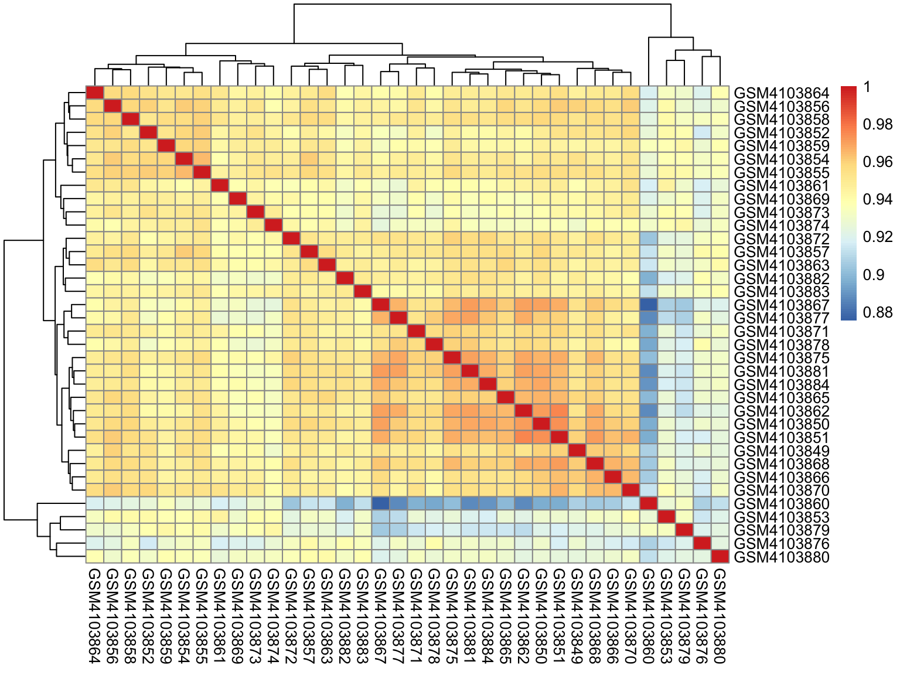

Datos del estudio
Universidad de Valencia
2 February 2023
En este apartado lo que se va a intentar es explicar qué datos se han usado en el estudio y cuál ha sido el motivo de usar esos datos. También se mostrará algo de código y se verá un primer análisis exploratorio de los datos.
Elección de datos
Esta parte creo que no ha sido la más acertada por mi parte debido a mi poca experiencia todavía en el mundo de la bioinformática. Entonces en un principio entontré dos posibles fuentes de datos:
(GSE138214)[https://www.ncbi.nlm.nih.gov/geo/query/acc.cgi?acc=GSE138214]
(GSE138261)[https://www.ncbi.nlm.nih.gov/geo/query/acc.cgi]
¿Por qué elegí estos dos estudios?Porque son estudios que contienen arrays de Affymetrix de la expresión del genoma humano. El problema fue que ambos tenían datos mezclados, es decir que algunas de las muestras eran las mismas. En un primer momento se intentó combinar ambos experimentos, pero aquí surgió el siguiente problema y es ¿cómo puedo combinar muestras de diferentes plataformas? Después de investigar cómo lo podía hacer, ví que había un montón de problemas luego en los análisis de expresión diferencial (objetivo del trabjo), así que finalmente y lamentando tener que acotar el scope del trabajo se optó por usar GSE138261 con las muestras de la primera plataforma.
Características de la matriz de expresión con la que se realizará el estudio:
| Control | 19 |
| AD | 17 |
| man | 16 |
| woman | 19 |
| NA | 1 |
Análisis exploratorio
En este apartado lo que se va hacer es intentar generar algún tipo de gráfico para poder poder ver algún tipo de patrón (si fuera posible).
library(GEOquery)
id_gse <- "GSE138261"
gse138261_raw <- getGEO(id_gse)[[1]]
length(gse138261_raw)Una vez que ya hemos extraído de GEO los archivos del “Expression Set”, lo que vemos es que los valores de expresión son altos. Para poder trabajar mejor se aplica el logaritmo base 2 y representamos el resultado con un .
exprs(gse138261_raw) <- log2(exprs(gse138261_raw))
boxplot(exprs(gse138261_raw), outline = FALSE)
Ahora vamos a ver un mapa de calor, en el que se ve la interacción entre las distintas muestras, contra más cercanas a 0, el valor es menos representativo, es decir, esas muestras tienen menos que ver.
library(dplyr)
sampleInfo <- pData(gse138261_raw)
sampleInfo <- select(sampleInfo, "age:ch1",
"disease state:ch1", "gender:ch1")
sampleInfo <- rename(sampleInfo, age = "age:ch1",
disease_state = "disease state:ch1",
gender = "gender:ch1")
corMatrix <- cor(exprs(gse138261_raw), use = "c")
pheatmap(corMatrix)
El mismo mapa de calor pero con más información también de las variables de edad, género y viendo cuáles pertenecen a Alzheimer (AD) y al control.
rownames(sampleInfo) <- colnames(corMatrix)
pheatmap(corMatrix, annotation_col = sampleInfo)El último gráfico ha sido un poco de investigación propio y ver cómo se puede hacer, se calcula pca (principal components analysis) y se van a agrupar viendo cómo de separadas están los AD de los control y también de cada muestra se ve la edad del paciente.
library(ggplot2)
library(ggrepel)
pca <- prcomp(t(exprs(gse138261_raw)))
cbind(sampleInfo, pca$x) %>%
ggplot(aes(x = PC1, y = PC2, col = disease_state,
label = paste("Age", age))) + geom_point() +
geom_text_repel()